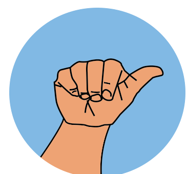

Cámara en vivo
Sin conexiónTodo empieza con tu mano.
Activa la cámara y muestra una mano completa.
Busca un lugar con buena iluminación.
Enciende la cámara, forma una seña y construye tu mensaje.
Activa la cámara y muestra una mano completa.
Busca un lugar con buena iluminación.
Usa una referencia real de LESSA y enseña al sistema cómo haces una letra o una seña con una mano.

Mantén la posición de la referencia sin mover la mano.
Regla inicial experimental1. Consulta la referencia. 2. Captura una posición o un movimiento. 3. Revisa y guarda el ejemplo. Repite al menos 5 veces variando un poco el ángulo; para J y Z utiliza movimiento y distintas velocidades.
Tus ejemplos se guardan en este navegador. Exporta una copia para usarlos en otro dispositivo.
Comprueba que hiciste la seña correcta. Este ejemplo no se añadirá hasta que lo guardes.
Se comparten coordenadas, sin video. Otros visitantes podrán cargarlas. Los ejemplos no han sido validados por una persona experta en LESSA.
Conectado al proyecto exclusivo SeñaLetra. Puedes compartir los ejemplos que ya tienes guardados.
Puedes probar un movimiento manualmente o activar la detección automática. La prueba no agrega ejemplos al entrenamiento.
Las muestras guardan coordenadas de una mano, no video. La variación de velocidad se compensa de forma experimental; no equivale a un modelo validado con muchas personas. No se admiten aún señas de dos manos ni rasgos faciales.
Un laboratorio en evolución. Las reglas iniciales reconocen algunas poses de letras y aún no están validadas para LESSA. La calibración aprende tus ejemplos. No interpreta conversaciones completas.
Materiales de LESSA para consultar y comprobar tus señas. No sustituimos estas referencias por ilustraciones inventadas.
Láminas del abecedario y números salvadoreños, además de materiales sobre gramática.
Consultar material ↗02 / EN MOVIMIENTOVideolecciones en situaciones escolares para observar movimiento, contexto y expresión.
Ver lecciones ↗03 / UNIVERSIDAD DE EL SALVADORReferencia de vocabulario universitario, con imágenes y enlaces a demostraciones mediante QR.
Abrir diccionario ↗LESSA tiene gramática, expresiones y variaciones propias. Deletrear letras es una parte del proyecto; comprender una conversación requiere mucho más que reconocer una mano.